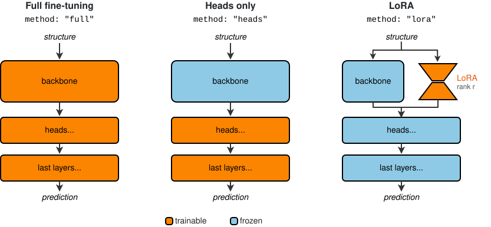
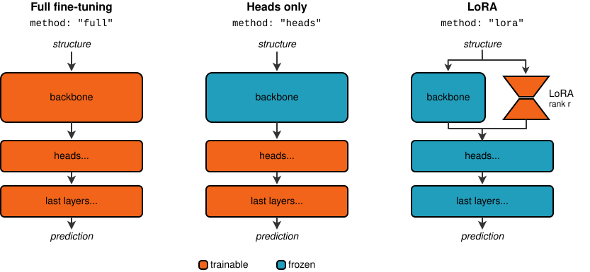

Fine-tune a pre-trained model¶
Fine-tuning starts a new training run from an existing checkpoint. The model architecture and weights are loaded from the checkpoint, while the optimizer and learning-rate scheduler are initialized from the new options file. When restarting an interrupted training run, the optimizer and scheduler states are restored as well.
Fine-tuning support and configuration depend on the architecture. See the architecture reference for supported methods and options. The examples and detailed behavior described below refer to PET.
The YAML snippets below are configuration fragments to include in your options file. For
a complete options file and a worked example, see the fine-tuning tutorial. Once the options file is ready, start the run with mtt train
options.yaml.
Choosing a strategy¶
The method option controls which model parameters are trained after loading the
checkpoint.
{kind=link}

{kind=link}

Method |
What is trained |
When to consider it |
|---|---|---|
|
All model parameters |
A general starting point for adapting a pretrained model to your dataset, especially when it covers structures poorly represented in the original training data. |
|
Selected prediction heads and final layers, with the backbone frozen |
When adapting to reference labels for similar structures, for example, another DFT functional. |
|
Low-rank adapters in selected linear layers, with original parameters frozen |
When you want to adapt the representation while training fewer parameters than full fine-tuning. |
These are starting points for choosing a strategy. Compare validation performance on your task: dataset size or a change in level of theory alone does not determine the best method.
Both full and lora can change the backbone representation used by the prediction
heads. Full fine-tuning updates the original parameters, while LoRA freezes them and
trains an added low-rank contribution inside selected linear layers. With heads, the
backbone is unchanged. The strategy also determines whether existing targets are
retained, see Retaining multiple energy targets.
All three strategies can use inherit_heads to initialize a new target head from an
existing one instead of starting from random weights (see Inheriting weights from existing heads).
By default, before model training starts, metatrain fits a composition baseline for each new energy target using the fine-tuning data. This baseline is a sum of contributions from each element, weighted by the number of atoms of that element in the structure. The fitted coefficients stay fixed during model training. Existing energy targets keep the baseline coefficients stored in the checkpoint. This default behavior applies to all three fine-tuning methods.
The architecture.training.atomic_baseline option can override the default with fixed
coefficients or a compatible composition-model checkpoint. See atomic_baseline in
the architecture reference for the supported options.
The number of trainable parameters and their fraction of the total are logged at the start of the run. These counts provide a quick check that freezing was applied as expected.
Fine-tuning methods¶
Full fine-tuning¶
Full fine-tuning trains all model parameters, including the backbone, prediction heads, and final layers:
architecture:
name: pet
training:
learning_rate: 1e-5
finetune:
method: full
read_from: path/to/checkpoint.ckpt
A lower learning rate than the one used for the original training is usually a good
starting point. For example, if the original training used 1e-4, try 1e-5 and
adjust based on validation performance.
Note
Full fine-tuning removes targets that are not part of the new training set. To keep the checkpoint’s original energy target, include that target and its reference labels during fine-tuning as described in Retaining multiple energy targets.
Heads only¶
Head-only fine-tuning freezes the backbone and trains only the selected readout:
architecture:
name: pet
training:
learning_rate: 1e-5
finetune:
method: heads
read_from: path/to/checkpoint.ckpt
config:
head_modules: ["node_heads", "edge_heads"]
last_layer_modules: ["node_last_layers", "edge_last_layers"]
The *_heads modules are usually multilayer perceptrons that transform the backbone
features. The *_last_layers modules are the final layers that map the resulting
features to target contributions.
With the configuration above, heads for targets in the training data are updated. Existing targets absent from that data are kept. Because the backbone remains frozen, their heads still receive the representation they were trained on.
LoRA¶
LoRA fine-tuning adds trainable low-rank adapters to selected linear layers and freezes the original model parameters:
architecture:
name: pet
training:
learning_rate: 1e-5
finetune:
method: lora
read_from: path/to/checkpoint.ckpt
config:
rank: 4
alpha: 8
target_modules: ["input_linear", "output_linear"]
The target_modules entries are matched against layer attribute names. The values
shown above are the defaults. rank controls the size of the low-rank update, and the
adapter contribution is multiplied by alpha / rank. Tune these settings using
validation performance.
With the configuration above, prediction heads remain frozen. When fine-tuning a new
target variant, its newly created head weights therefore stay at their initialization.
If a compatible source head is available, use inherit_heads to copy its initial
weights instead of keeping a random initialization. The inherited head remains frozen
and only the LoRA adapter weights are trained.
Working with target variants¶
A variant is an alternative version of a target, distinguished by a suffix in the target
name, such as energy/pbe. A model can hold several variants of the same target. The
variant to use can be selected at evaluation and simulation time.
Creating a new variant¶
When fine-tuning to a new energy definition, create a new energy variant to distinguish
it from the checkpoint’s original energy target:
training_set:
systems:
read_from: path/to/dataset.xyz
length_unit: angstrom
targets:
energy/<variantname>:
quantity: energy
key: <energy-key>
unit: <energy-unit>
description: "description of your variant"
Energy variant names follow the pattern energy/<variantname>. Choose a name that
identifies the level of theory, functional, or dataset, for example energy/pbe or
energy/my-dataset.
Inheriting weights from existing heads¶
If the new target is close to a target already present in the checkpoint, its head can be initialized from the existing one:
architecture:
name: pet
training:
finetune:
method: full
read_from: path/to/checkpoint.ckpt
inherit_heads:
energy/<variantname>: energy
The keys of inherit_heads are the destination targets defined in the training data.
The values are source targets in the checkpoint. Their head dimensions must be
compatible.
inherit_heads copies head and final-layer weights. It does not copy composition
baselines or scaler settings, so the new variant need not initially produce the same
predictions as the source target.
The selected strategy determines whether the copied weights are trainable. They are
trainable with full and with heads when the destination modules are selected,
but remain frozen with the documented lora configuration. The source target does not
need to be part of the new training set: its weights are copied before missing targets
are removed.
Retaining multiple energy targets¶
With full and lora, the backbone representation can change. PET therefore
removes targets that are absent from the current training set. To retain several energy
targets, include reference labels for all of them during fine-tuning:
training_set:
- systems:
read_from: dataset_1.xyz
length_unit: angstrom
targets:
energy/<variant1>:
quantity: energy
key: my_energy_label1
unit: eV
description: "my variant1 description"
- systems:
read_from: dataset_2.xyz
length_unit: angstrom
targets:
energy/<variant2>:
quantity: energy
key: my_energy_label2
unit: eV
description: "my variant2 description"
The two targets can also come from the same structures file if both labels are stored
there. In that case, use the corresponding key for each target. See the
Training YAML reference for details on training with multiple
datasets.
Using the fine-tuned model¶
Evaluating a variant¶
Select a fine-tuned variant during evaluation by using its full target name in the evaluation options:
systems:
read_from: path/to/dataset.xyz
targets:
energy/<variantname>:
key: <energy-key>
unit: <energy-unit>
forces:
key: forces
The key entries identify the reference energy and force labels in the dataset.
Using variants in simulation engines¶
Simulation engines usually request the standard energy output. To use a target such
as energy/finetune, select its variant explicitly. With ASE, select the variant
using the variants argument of MetatomicCalculator:
from metatomic_ase import MetatomicCalculator
calc = MetatomicCalculator("model-ft.pt", variants={"energy": "finetune"})
atoms.calc = calc
Here, "energy": "finetune" selects the model output energy/finetune for energy
and force calculations. Use the part of the target name after energy/ as the variant
name.
With LAMMPS, use the variant keyword:
pair_style metatomic model-ft.pt [...other arguments...] variant finetune
Replace finetune with the part of the target name after energy/.
For more details, see the fine-tuning tutorial, the metatomic ASE documentation, and the metatomic LAMMPS documentation.